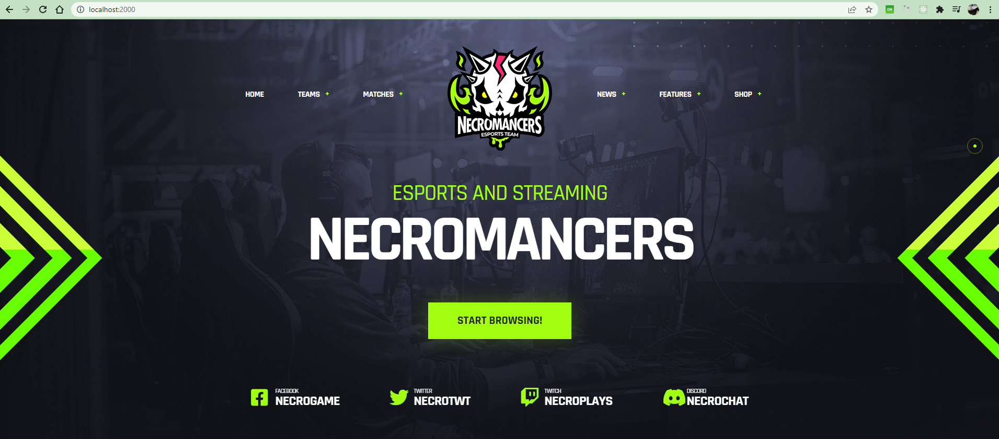
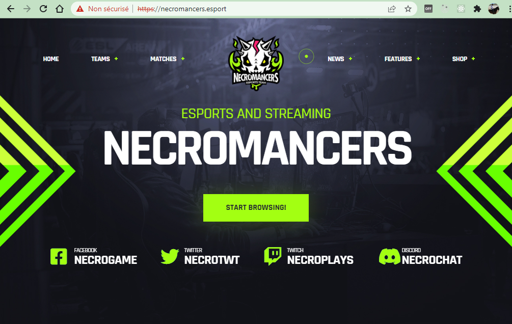
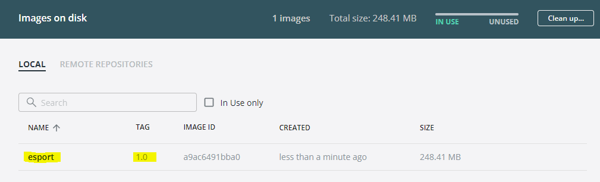

13.0 Mise en pratique
Cette série de travaux reprend les concepts de base de Docker et vous guides dans leur mise en pratique.
13.1 Serveur HTTP avec Docker
Nous allons vous guider à chaque étape de la mise en place d’un serveur WEB APACHE sous DOCKER.
Une équipe d’ESPORT : NECROMANCERS, a confié la création de son site web à une agence de communication dont la maquette HTML est disponible dans le fichier esport.zip.
Créez un dossier « docker » dans « mes documents » et créez un autre dossier à l’intérieur nommé « www ».
Téléchargez ce fichier sur votre disque dur, et dézippez l’archive. Vous obtenez un dossier qui se nomme : « esport ».
Déplacez le dossier « esport » dans le dossier.
Votre première mission sera de mettre en place un serveur WEB sous Apache avec Docker.
Nous avons plusieurs possibilités qui s’offrent à nous : * Soit nous téléchargeons une image d’une distribution Linux puis nous installons et configurons nous-même Apache. * Soit nous trouvons une image contenant déjà Apache.
La force de Docker est de posséder une sorte de « AppStore », un « Hub » appelé le « dockerHub » qui regroupe des images officielles et non officielles utilisables. Recherchons donc une image correspondant à notre besoin : Docker Hub
Examinons les distributions Linux qui accompagnent Apache en cliquant dessus. Nous constatons qu’Alpine est la distribution par défaut. C’est un bon choix, car c’est une distribution Linux Légère.

En parcourant la page dédiée de l’image Apache nous trouvons le sous-titre « How to use this image » qui nous permettra de comprendre comment utiliser ce container.
Nous l’installerons grâce au nom de l’image : httpd.
Nous allons avoir besoin de dire au container Apache où trouver les fichiers de la maquette pour les interpréter.
Nous savons qu’ils sont stockés sur notre machine ,appelée la machine hôte, au chemin suivant dans mon cas : C:\Users\baptiste\Documents\docker\td\www\esport.
Le container Apache, (lire la documentation) est configuré pour aller lire les fichiers Web dans son dossier interne : /usr/local/apache2/htdocs/.
Il faut donc monter notre répertoire de la machine hôte dans le dossier htdocs de Apache2.
Cela est possible grâce à l’option : -v <HOST_PATH>:<CONTAINER_PATH>
Apache, le serveur Web, écoute par défaut sur le port 80 du container. Il faut donc lier un port de la machine hôte avec le port 80 du container. Nous décidons arbitrairement de publier le port 80 du container sur le port 2000 de notre machine hôte. Grâce à l’option -p HOST_PORT:CONTAINER_PORT.
Une fois que notre container est lancé, nous voulons continuer à avoir la main sur notre terminal. Par conséquent il faudra donc utiliser l’option -d pour lancer le container en background (tâche de fond).
Nous nommerons ce container avec l’option : --name serveur_http.
Au final, la commande pour installer et lancer notre container sera :
docker container run -d --name serveur_http -v $PWD/Documents/docker/td/www/esport:/usr/local/apache2/htdocs -p 2000:80 httpd

Pour tester, ouvrez votre navigateur et saisissez l’adresse : http://localhost:2000/
Nous allons ouvrir un shell dans le container pour consulter le contenu du dossier : /usr/local/apache2/htdocs
Tapez la commande :
docker container exec -ti serveur_http sh
docker container exec permet de donner l’ordre à notre container de lancer une commande et l’option -ti permet de garder la main sur le shell.
À partir du shell, plaçons-nous donc dans le répertoire htdocs.
.. code-block:
cd /usr/local/apache2/htdocs
et listons les fichiers le contenant :
ls
Nous voyons que le dossier HTDOCS de notre container contient les fichiers de notre application provenant de notre dossier esport.
Avec un éditeur de code comme Visual Studio Code, ouvrez le fichier /www/esport/index.html à partir de la machine hôte.
Ajoutez le code suivant entre les lignes 250 et 251 et actualisé le navigateur :
<h4 class="text-white landing-title">mode dev</h4>

Note
Nous constatons que les fichiers de notre application ne sont pas réellement dans le container. Nous l’avons prouvé en modifiant le fichier à partir de la machine hôte et en observant que la modification a été prise en compte par le navigateur Nous n’avons créé qu’un lien symbolique de nos fichiers locaux dans le container.
Notre site, est accessible !!! Nous avons rempli notre première mission !
13.2 Serveur HTTPS avec Docker
Dans la partie 13.1, nous avons mis en place un container Apache permettant d’accéder à notre site web par l’intermédiaire de l’adresse : http://localhost:2000
Mais la connexion http n’est pas sécurisée. Pour cela, il faut que le protocole soit https.
Rappel : Création des certificats SSL
Les applications Web utilisent le protocole HTTPS pour s’assurer que les communications entre les clients et le serveur soient cryptées et ne puissent pas être interceptées.
De plus, Google pénalise le contenu des sites web qui utilisent le protocole HTTP seul dans le référencement.
Il est donc obligatoire de configurer notre serveur pour lui permettre d’être accessible via le protocole HTTPS.
Pendant le développement local, les développeurs utilisent :
Soit le protocole HTTP.
Cela signifie alors que les versions du projet en local ou en production sont développées dans un environnement différent. Cela peut être plus difficile pour repérer les problèmes.
Soit un (faux) certificat SSL Autosigné.
L’environnement de développement est alors proche de l’environnement de production, mais le navigateur continue de traiter les requêtes différemment. Par exemple, les fausses requêtes SSL ne sont pas mis en cache.
Toutes les communications clients/serveurs ont besoin d’être sécurisés avec un protocole. Nous utiliserons SSL (Secure Socket Layer).
Les communications sécurisées entre des applications se font grâce à des certificats (CERT) distribués par une autorité certifiante (CA) qui est mutuellement agréé par le client et le serveur.
Le format CERT
La plupart des certificats ont pour extension .pem, .cer, .crt, .key.
Les clients (navigateurs) communiquant avec le serveur vont garder le fichier *.pem (PRIVACY ENHANCED MAIL) ou *.CER (extension pour les certificats SSL) pour établir une connexion sécurisée.

L’algorithme RSA (Rivest Shamir Adleman) est utilisé pour crypter et décrypter les messages dans une communication où une clé est gardée publique et l’autre clé est privée. C’est le concept de chiffrage asymétrique.
Le client demande une ressource protégée au serveur.
Le client présente les informations cryptées avec sa clé publique au serveur.
Le serveur évalue la requête avec sa clé privée (disponible seulement coté serveur) et répond en retour en rapport avec la ressource demandée par le client.
Cela fonctionnerait de la même manière pour l’authentification mutuelle où le client et le serveur fournissent tous deux leurs clés publiques et déchiffrent leurs messages avec leurs propres clés privées disponibles de leur côté.
Note
Nous avons déjà configuré HTTPS sur un serveur apache sous Ubuntu lors de d’exercices précédents avec des machines virtuelles.
Aujourd’hui nous allons donc travailler sur cette distribution, revoir les étapes de création d’un certificat SSL auto-signé et l’intégration dans une image Docker.
Bien entendu, il existe déjà des images toutes prêtes sur Docker Hub … mais nous n’apprendrons rien de nouveau aujourd’hui si nous nous contenterions d’utiliser un existant.
Maintenant, construisons notre container.
Comme nous sommes en local, il nous faudra autosigner nos certificats SSL.
Stoppons d’abord le container serveur_http précédent qui utilise le port 2000 :
docker container stop serveur_http
Nous allons installer un container avec une image Ubuntu et mapper les ports 80 et 443 de la machine hôte avec les même ports du container.
docker run -it -p 80:80 -p 443:443 --name serveur_https ubuntu /bin/sh;
Installons un éditeur de texte nano , apache2 notre serveur http et opennss qui permettra de générer des certificats.
apt update
apt install nano apache2 openssl –y
Il faut maintenant démarrer le serveur Apache:
service apache2 start
Testons dans le navigateur : http://localhost
Nous voulons un site pour notre équipe de Esport : Les Necromancers !
Créons donc un dossier spécialement pour eux!
mkdir /var/www/html/esport
Et créons dedans un fichier index.html qui contiendra le code suivant :
<h1>Page de test des NECROMANCERS !!</h1>
Pour cela nous utiliserons notre éditeur de texte nano :
nano /var/www/html/esport/index.html
Rappel : Pour sauvegarder, tapez au clavier sur les touches CTRL + O et Entrée et pour quitter CTRL + X
Nous allons maintenant modifier notre fichier HOSTS sur la machine hôte afin de forcer la redirection du domaine necromancers.esport sur notre serveur local en cours de conception.
Ouvrez Visual Studio Code ou un autre éditeur comme NotePad++ avec des droits d’administrateur, et éditez le fichier :
C:\Windows\System32\drivers\etc\hosts
Ajoutez la ligne suivante :
127.0.0.1 necromancers.esport
Puis modifiez les paramètres du proxy comme suit :
Ainsi, nous ne passerons pas par le proxy, ni par le DNS pour accéder à notre site avec l’url necromancers.esport , mais sur le serveur local d’addresse IP directement: 127.0.0.1.
Maintenant, il faut configurer Apache dans notre container pour que notre URL pointe vers le dossiers WEB du serveur.
Apache permet de faire des redirections de connexions entrantes sur un de ses ports vers un dossier de notre choix.
Cela se fait grâce aux VirtualHost. Copions le fichier VirtualHost de base nommé 000-default.conf et appelons cette copie esport.conf.
cp /etc/apache2/sites-available/000-default.conf /etc/apache2/sites-available/esport.conf
Modifions maintenant ce nouveau fichier :
nano /etc/apache2/sites-available/esport.conf
Profitons-en aussi pour modifier le fichier /etc/apache2/apache2.conf.
Et lui rajouter une ligne : ServerName localhost.
Cela va permettre de nommer notre serveur local, et d’éviter d’avoir des avertissements au redémarrage.
Le fichier esport.conf est prêt ! Il faut le charger dans la configuration du serveur Apache2.
a2ensite esport
Pour que les modifications soient prise en compte, redémarrons le serveur.
service apache2 restart
Maintenant que notre serveur Apache est configuré pour que l’adresse : necromancers.esport pointe vers notre dossier web. ( Testez ! )
Il nous faut installer un certificat pour obtenir une connexion sécurisée en HTTPS.
openssl req -x509 -nodes -days 365 -newkey rsa:2048 -keyout /etc/ssl/private/esport.key -out /etc/ssl/certs/esport.crt
Cette commande va créer 2 certificats dans les emplacements : /etc/ssl/private/esport.key et /etc/ssl/certs/esport.crt.
Il faut maintenant installer les certificats sur le serveur et les associés à notre domaine.
Copions le fichier de base default-ssl.conf et renommons le en esport-ssl.conf.
cp /etc/apache2/sites-available/default-ssl.conf /etc/apache2/sites-available/esport-ssl.conf
Il s’agit simplement d’un VirtualHost qui est chargé de rediriger les connexions entrantes provenant du port 443, le port dédié au protocole HTTPS.
Editons ce fichier :
nano /etc/apache2/sites-available/esport-ssl.conf

Pour tester notre configuration, il faut executer la commande :
apachectl configtest
Et si tout ce passe bien, la réponse devrait être :
# apachectl configtest
Syntax OK
Chargeons le module SSL dans apache pour qu’il puisse prendre en compte les connexions HTTPS et les certificats.
a2enmod ssl
Chargeons aussi le nouveau VirtualHost :
a2ensite esport-ssl
En test l’adresse https://necromancers.esport <https://necromancers.esport> depuis votre navigateur, Vous devriez avoir cela :

Il faut autoriser la connexion au site :

Note
Pourquoi nous avons ce message d’alerte ?
Tout simplement parce que le navigateur a détecté que nous sommes connecté avec le protocole HTTPS. Notre serveur lui a fourni un certificat … qui est … autosigné ! Cela alerte donc le navigateur.
Nous voulons que si l’utilisateur tape HTTP dans l’adresse au lieu de HTTPS le serveur puisse le rediriger automatiquement.
Activons le mode rewrite de Apache qui permet à Apache de réécrire/reformater les URL captées :
a2enmod rewrite
Et éditons le fichier
nano /etc/apache2/sites-available/esport.conf
Ajoutons cette régle de réécriture d’url :
RewriteEngine On
RewriteRule ^(.*)$ https://%{HTTP_HOST}$1 [R=301,L]
Redémarrons Apache :
service apache2 restart
Notre serveur est maintenant correctement configuré !
Note
Vous pouvez être fier du travail accompli jusqu’alors ! Et pourquoi ne pas créer une image basée sur cette configuration ? Afin de pouvoir créer une infinité de container avec les même caractéristiques. Cela évitera de recommencer toutes les étapes que nous avons suivies jusqu’alors.
Création d’une image Docker
Nous avons jusqu’alors créé des containers à partir d’images de bases que nous avons modifié. Il temps de créer notre propre image qui servira de “moule” pour des containers ayant besoin des caractéristiques que nous avons paramétrées.
Mais avant faisons un peu de ménage dans notre container.
Supprimons le fichier index.html du dossier /var/www/html/esport
rm /var/www/html/esport/index.html
La commande pour créer une nouvelle image à partir d’un container est :
docker commit <CONTAINER_ID> <NOM_DE_L_IMAGE>
Il nous faut donc récupérer l’identifiant de notre container dans un premier temps :
docker ps -a
Serveur_https possède bien l’identifiant : 00e15c9f63ea
Maintenant, nous pouvons créer une nouvelle image à partir de cet identifiant.
Nous respecterons les conventions de nommage : <Nom du constructeur> / <Nom de l'image> : <Numéro de version>.
Notre image s’appelera alors : siolaon/https:1.0.
Lançons la création de l’image avec l’option -a pour définir le nom de l’auteur, mettez le votre car vous l’avez bien mérité:
docker commit -a Bauer 00e15c9f63ea siolaon/https:1.0
Vérifions si l’image a bien été créée en listant les images disponibles sur notre machine hôte.
docker images

Nous pouvons retrouver l’image également dans l’application Docker Desktop, onglet “Images”.

Stoppons maintenant notre container serveur_https :
docker container stop serveur_https
Maintenant, voici venu le grand moment tant attendu ! Celui de monter notre image, dans un nouveau container avec le dossier web esport !
Positionnons nous dans le répertoire contenant notre dossier www, pour ma part:
cd C:\Users\baptiste\Documents\docker\td\www
docker container run -itd --name server_esport -v $PWD/esport:/var/www/html/esport -p 80:80 -p 443:443 siolaon/https:1.0
Maintenant il faut lancer le serveur apache2 manuellement depuis le serveur :
docker container exec -ti server_esport sh
et dans le shell lancer la commande :
service apache2 start
Ouvrez le navigateur et contemplez votre oeuvre :
13.3 Création d’un Dockerfile
Nous sommes satisfait du résultat mais il reste un goût d’inachevé, n’est ce pas ?
Créer un container à partir de notre image, et devoir lancer la commande service apache2 start à partir de son shell, demande une manipulation dont on aimerait pouvoir se passer …
Cela va être possible en créant un fichier Dockerfile.
Ce fichier contient une liste de commande à exécuter pour concevoir notre propre image.
Listons les actions effectuées dans la partie 13.2
Création d’un container avec une image
Ubuntu.Nous avons mis à jour les dépôts
Ubuntu.Nous avons installé
Apache2.Nous avons installé
Nano.Nous avons installé
OpenSSLet récupéré 2 fichiers :esport.keyetesport.crt.Nous avons créé 2 fichiers VirtualHost
esportetvesport-sslpour le site en http et https.Nous avons activé les modules
ssletrewritedans Apache.Nous avons chargé les VirtualHost
esportetesport-ssldans Apache.Nous avons redémarré Apache pour que les modifications soient prises en compte.
Nous avons lancé Apache.
Il va falloir créer un dossier nommé par exemple : esport_image, qui contiendra :

Notre dossier esport, avec dedans les pages html.
Nos fichiers VirtualHost déjà rédigés qui seront ensuite copiés dans Apache automatiquement :
esport.confetesport-ssl.conf.Un fichier
Dockerfile, fichier spécial composé des commandes à envoyer au Daemon Docker afin de générer une nouvelle image Docker conforme à nos objectifs.
Warning
Le fichier Dockerfile n’a pas d’extension.
Créez 2 fichiers : esport.conf et esport-ssl.conf.
Dont le contenu est :
Fichier : esport.conf
<VirtualHost *:80>
ServerName necromancers.esport
ServerAlias www.necromancers.esport
ServerAdmin webmaster@localhost
DocumentRoot /var/www/html/esport
ErrorLog ${APACHE_LOG_DIR}/error.log
CustomLog ${APACHE_LOG_DIR}/access.log combined
RewriteEngine On
RewriteRule ^(.*)$ https://%{HTTP_HOST}$1 [R=301,L]
</VirtualHost>
Fichier : esport-ssl.conf
<VirtualHost *:443>
ServerAdmin webmaster@localhost
ServerName necromancers.esport
ServerAlias www.necromancers.esport
DocumentRoot /var/www/html/esport
ErrorLog ${APACHE_LOG_DIR}/error.log
CustomLog ${APACHE_LOG_DIR}/access.log combined
SSLEngine on
SSLCertificateFile /etc/ssl/certs/esport.crt
SSLCertificateKeyFile /etc/ssl/private/esport.key
<FilesMatch "\.(cgi|shtml|phtml|php)$">
SSLOptions +StdEnvVars
</FilesMatch>
<Directory /usr/lib/cgi-bin>
SSLOptions +StdEnvVars
</Directory>
</VirtualHost>
Maintenant nous allons pouvoir rédiger notre fichier Dockerfile :
La première ligne doit contenir l’instruction FROM qui définie l’image qui servira de référence.
Nous allons construire notre projet autour de la distribution linux Ubuntu dans sa dernière version.
FROM ubuntu:latest
La dernière ligne contiendra l’instruction CMD. Il s’agit de la commande à exécuter dès que notre container sera lancé. Nous voulons lancer apache par la commande : service apache2 start.
CMD ["service", "apache2", "start"]
Entre les deux, il faut maintenant programmer la mise en place de notre serveur WEB avec un certificat SSL autosigné et les fichiers de notre projet dedans.
L’instruction RUN permet d’établir une liste de commandes à exécuter. Chaque instruction RUN créé une couche (layer) dans notre container.
Donc au lieu de lancer une instruction RUN par commandes, nous allons les chaîner, grâce à l’opérateur logique &&.
Note
Chaîner 2 ou 3 ou 4 commandes peut vite créer une ligne extrêmement longue. Par soucis de lisibilité, il est bien de pouvoir sauter une ligne entre chaque commande. Mais le compilateur qui va se charger de créer l’image ne va pas comprendre, pour l’aider, il faut ajouter un `` `` après notre opérateur logique.
Exemple : .. code-block:
RUN apt install apache2 -y && apt install openssl -y
deviendra sur 2 lignes :
RUN apt install apache2 -y && \
apt install openssl -y
Donc nous aurons une instruction RUN qui contiendra toutes les commandes que nous avons saisi.
ENV DEBIAN_FRONTEND=nonintercative
RUN apt update && \
apt install apache2 -y && \
echo 'ServerName localhost' >> /etc/apache2/apache2.conf && \
apt install openssl -y && \
openssl req -x509 -nodes -days 365 -newkey rsa:2048 -keyout /etc/ssl/private/esport.key -out /etc/ssl/certs/esport.crt -subj "/C=FR/ST=AISNE/L=LAON/O=BTS SIO/OU=IT Department/CN=necromancers.esport" && \
mkdir /var/www/html/esport
Si vous vous rappelez, lorsque nous avons créé nos certificats SSL, il y a eu une série de questions qui nous a été posée. Lors de la création de notre image, nous ne pourrons pas y répondre avec notre clavier, mais seulement grâce au paramètre saisie directement dans la commande : -subj "/C=FR/ST=AISNE/L=LAON/O=BTS SIO/OU=IT Department/CN=necromancers.esport".
De même, Apache demande aussi durant son installation de lui donner des informations comme le continent et le pays dans lequel nous sommes. Pour éviter cette question, et nous bloquer durant la création de l’image, nous utiliserons la variable d’environnement ENV DEBIAN_FRONTEND=nonintercative. Grâce à elle, notre système d’exploitation Ubuntu cessera de nous poser des questions, et nous aurons la configuration par défaut des applications que nous installerons.
L’instruction echo 'ServerName localhost' >> /etc/apache2/apache2.conf ajoute au fichier de configuration d’Apache la ligne ServerName localhost afin de nommer le serveur par défaut.
L’instruction COPY va se charger de copier : les fichiers de configuration Apache et HTML dans les bons emplacements du futur container.
COPY esport/ ${path}/esport
COPY esport.conf esport-ssl.conf /etc/apache2/sites-available/
Il faut maintenant activer les modes Rewrite et SSL d’Apache, et lui injecter nos fichiers VirtualHost.
RUN a2enmod ssl && \
a2enmod rewrite && \
a2ensite esport &&\
a2ensite esport-ssl
L’instruction EXPOSE nous permettra de définir les ports utilisés par défaut par le container.
EXPOSE 80 443
Ainsi, notre fichier Dockerfile complet sera ainsi :
FROM ubuntu:latest
ENV DEBIAN_FRONTEND=nonintercative
ENV path /var/www/html/
RUN apt update && \
apt install apache2 -y && \
echo 'ServerName localhost' >> /etc/apache2/apache2.conf && \
apt install openssl -y && \
openssl req -x509 -nodes -days 365 -newkey rsa:2048 -keyout /etc/ssl/private/esport.key -out /etc/ssl/certs/esport.crt -subj "/C=FR/ST=AISNE/L=LAON/O=BTS SIO/OU=IT Department/CN=necromancers.esport" && \
mkdir ${path}/esport
COPY esport/ ${path}/esport
COPY esport.conf esport-ssl.conf /etc/apache2/sites-available/
RUN a2enmod ssl && \
a2enmod rewrite && \
a2ensite esport &&\
a2ensite esport-ssl
EXPOSE 80
CMD ["service", "apache2", "start"]
Nous avons rajouté une variable ENV nommée path qui nous permet de définir un chemin qui est utilisé plusieurs fois. Cette variable est utilisée grâce à cette notation ${path}.
Il est temps maintenant, de créer notre image à partir de notre fichier Dockerfile.
Placez vous dans le dossier contenant ce fichier :
Pour ma part mon fichier Dockerfile, se trouve dans le dossier : C:\Users\p02\Documents\Cours\docker
cd C:\Users\p02\Documents\Cours\docker
Créons maintenant notre image nommée esport dans sa version 1.0. La création peut prendre un certain temps.
Warning
N’oubliez pas le “.” !
docker image build -t esport:1.0 .

Notre image apparait bien dans Docker Desktop.
Maintenant, montons un container basée sur cette image.
Stopez tout les containers en cours d’exécution afin d’éviter que le port 80 soit déjà utilisé.
docker container stop $(docker container ls -q)
Puis :
docker container run -tid --name site_necroteam -p 80:80 esport:1.0 sh